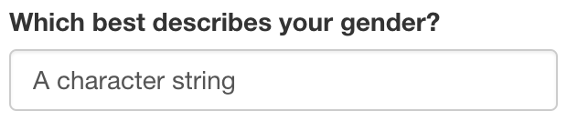
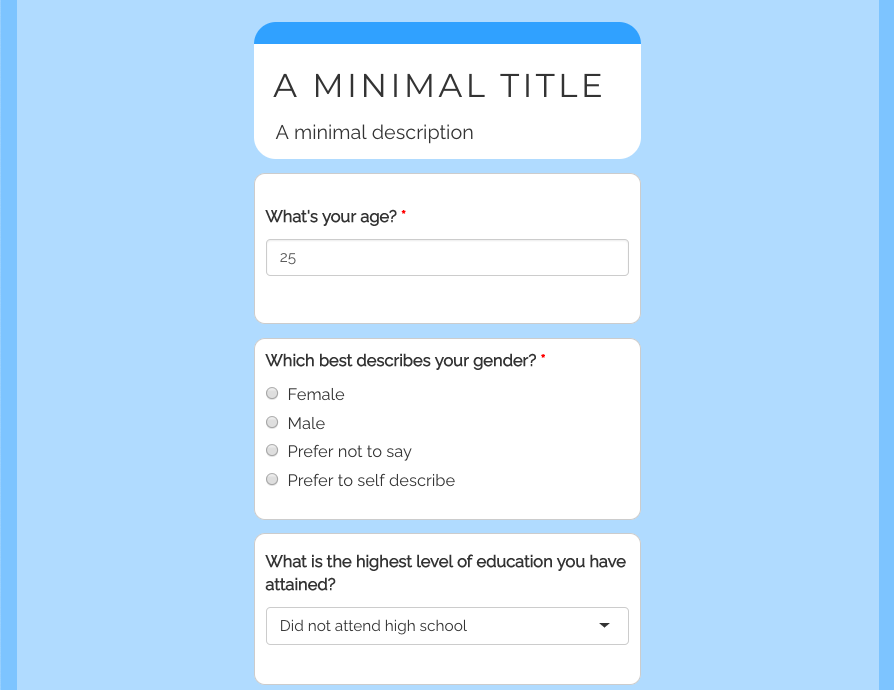

Introduction
The ability to easily collect and analyze survey data is incredibly important. Many platforms provide user-friendly methods to do this. Google Forms, SurveyMonkey, and Qualtrics are all popular options. However, these services don’t always integrate easily with existing data analysis and/or research pipelines. Because of R’s prevalence in academia and research, {shinysurveys} was developed to streamline the data collection and analysis process.
In this vignette, I provide an overview of the main features of shinysurveys.1 Aligned with the basic structure of {shiny} applications, consisting of the user-interface and server components, this package has a function for each: surveyOutput() and renderSurvey(), respectively. The former accepts a data frame of questions that follow a specific format. To illustrate this, I will show a questionnaire from a recent study conducted by the D’Agostino McGowan Data Science Lab that is built into the shinysurveys package.2 The first ten (of 54) rows of this data frame look like:
#> # A tibble: 10 × 7
#> question option input_type input_id dependence dependence_value required
#> <chr> <chr> <chr> <chr> <chr> <chr> <lgl>
#> 1 What's your … 25 numeric age NA NA TRUE
#> 2 Which best d… Female mc gender NA NA TRUE
#> 3 Which best d… Male mc gender NA NA TRUE
#> 4 Which best d… Prefe… mc gender NA NA TRUE
#> 5 Which best d… Prefe… mc gender NA NA TRUE
#> 6 Which best d… NA text self_de… gender Prefer to self … FALSE
#> 7 What is the … Did n… select educati… NA NA FALSE
#> 8 What is the … Some … select educati… NA NA FALSE
#> 9 What is the … High … select educati… NA NA FALSE
#> 10 What is the … Some … select educati… NA NA FALSEThis data can be described as a tidy data frame, where each row is a unique observation and each column is a variable. While the full table consists of 54 rows, there are only 11 unique questions:
#> [1] "What's your age?"
#> [2] "Which best describes your gender?"
#> [3] "What is the highest level of education you have attained?"
#> [4] "What was your first language?"
#> [5] "In what language do you read most often?"
#> [6] "Have you ever learned to program in R?"
#> [7] "If yes, how many years have you been using R?"
#> [8] "Have you ever learned a programming language (other than R)?"
#> [9] "If yes, which language(s) and how many years have you been using each language?"
#> [10] "Have you ever completed a data analysis?"
#> [11] "If yes, approximately how many data analyses have you completed?"The reason for the discrepancy between the number of rows and unique questions derives from the fact that certain questions can have more than one possible response. For example, the multiple choice question asking about gender has four options: “Female”, “Male”, “Prefer not to say”, or “Prefer to self describe.” It thus has four rows, one per each option.
To create a question in the required format, seven parameters must be supplied. They are described in the package documentation and can be accessed by typing ?shinysurveys::teaching_r_questions in the R console:
- question: The question to be asked.
- option: A possible response to the question. In multiple choice questions, for example, this would be the possible answers. For questions without discrete answers, such as a numeric input, this would be the default option shown on the input. For text inputs, it is the placeholder value.
-
input_type: What type of response is expected? Currently supported types include
numeric,mcfor multiple choice,text,select,andy/nfor yes/no questions. - input_id: The input id for Shiny inputs.
- dependence: Does this question (row) depend on another? That is, should it only appear if a different question has a specific value? This column contains the input_id of whatever question this one depends upon.
- dependence_value: This column contains the specific value that the dependence question must take for this question (row) to be shown.
- required: logical TRUE/FALSE signifying if a question is required.
The next section describes input types native to {shinysurveys}.
Examples
Below are examples of the currently supported question types. I provide a thorough explanation for the numeric input, but only point out notable differences for other inputs.
Numeric Input
A good example of a numeric input is the first question: “What’s your age?”:
#> # A tibble: 1 × 7
#> question option input_type input_id dependence dependence_value required
#> <chr> <chr> <chr> <chr> <chr> <chr> <lgl>
#> 1 What's your a… 25 numeric age NA NA TRUEAs seen above, this row corresponds to the question “What’s your age?”. I know to expect a numeric response by looking at the input_type column, and the default value is equal to 25 according to the option column.3
I can also tell that there are no dependency questions. This means that no matter what value is entered, no follow-up question will appear. Lastly, I know it is a required question.4

Multiple Choice (mc) Input
An example of this is the question “Which best describes your gender?”:
#> # A tibble: 5 × 7
#> question option input_type input_id dependence dependence_value required
#> <chr> <chr> <chr> <chr> <chr> <chr> <lgl>
#> 1 Which best de… Female mc gender NA NA TRUE
#> 2 Which best de… Male mc gender NA NA TRUE
#> 3 Which best de… Prefe… mc gender NA NA TRUE
#> 4 Which best de… Prefe… mc gender NA NA TRUE
#> 5 Which best de… NA text self_de… gender Prefer to self … FALSEUnlike numeric inputs, the option column represents each of the possible responses for this question. You may notice that the fifth row of this question has NA in the option column and “text” in the input_type column. I will discuss this in more detail below, but for now, note that this question has a dependent. That is, if a specific option is chosen for this question, a new one will appear below. In this case, a question that accepts text as its input.

Text Input
Questions that need text-based input should specify “text” in the input_type column. As noted in the previous example, the following is a dependent of the question “Which best describes your gender?”:
#> # A tibble: 1 × 7
#> question option input_type input_id dependence dependence_value required
#> <chr> <chr> <chr> <chr> <chr> <chr> <lgl>
#> 1 Which best de… NA text self_de… gender Prefer to self … FALSEAs previously mentioned, the option column for text-based inputs corresponds to a placeholder value. It can be left blank (i.e. NA) or contain a character string. If they are left empty, the text field will display “Placeholder” as seen below. Otherwise, the character string will be displayed.


Select Input
Select inputs are great when there are many potential, discretely defined, response choices.5 An example is the question “What was your first language?” which contains 15 options:
#> # A tibble: 15 × 7
#> question option input_type input_id dependence dependence_value required
#> <chr> <chr> <chr> <chr> <chr> <chr> <lgl>
#> 1 What was you… Arabic select first_l… NA NA FALSE
#> 2 What was you… Armen… select first_l… NA NA FALSE
#> 3 What was you… Chine… select first_l… NA NA FALSE
#> 4 What was you… Engli… select first_l… NA NA FALSE
#> 5 What was you… French select first_l… NA NA FALSE
#> 6 What was you… Creole select first_l… NA NA FALSE
#> 7 What was you… German select first_l… NA NA FALSE
#> 8 What was you… Greek select first_l… NA NA FALSE
#> 9 What was you… Gujar… select first_l… NA NA FALSE
#> 10 What was you… Hebrew select first_l… NA NA FALSE
#> 11 What was you… Hindi select first_l… NA NA FALSE
#> 12 What was you… Itali… select first_l… NA NA FALSE
#> 13 What was you… Japan… select first_l… NA NA FALSE
#> 14 What was you… Other select first_l… NA NA FALSE
#> 15 What was you… NA text first_l… first_lan… Other FALSE
Yes or No (y/n) Input
Yes or no questions are self-explanatory. An example is the question “Have you ever learned to program in R?”:
#> # A tibble: 2 × 7
#> question option input_type input_id dependence dependence_value required
#> <chr> <chr> <chr> <chr> <chr> <chr> <lgl>
#> 1 Have you ever… Yes y/n learned… NA NA TRUE
#> 2 Have you ever… No y/n learned… NA NA TRUE
With an understanding of the available input types, I will now discuss how to implement a survey using this package.
Matrix Input
Survey questions are often presented in a grid. Consider the question:
Please indicate whether you agree, disagree, or are neutral about the following items. (1) I love sushi. (2) I love chocolate.
Using the following data frame, you could ask that question. 6
#> question option input_type input_id dependence dependence_value
#> 1 I love sushi. Disagree matrix matId NA NA
#> 2 I love sushi. Neutral matrix matId NA NA
#> 3 I love sushi. Agree matrix matId NA NA
#> 4 I love chocolate. Disagree matrix matId NA NA
#> 5 I love chocolate. Neutral matrix matId NA NA
#> 6 I love chocolate. Agree matrix matId NA NA
#> required
#> 1 FALSE
#> 2 FALSE
#> 3 FALSE
#> 4 FALSE
#> 5 FALSE
#> 6 FALSEIn the browser, that would look like this:

Implementing Surveys in Shiny
UI Function
surveyOutput() takes in a data frame of the form described above. You may also add a title and description for your survey with the arguments survey_title and survey_description, though these are optional. It also takes in a theme color to style your survey. Typical names such as “red” or “blue” work, as well as hex color codes such as “#63B8FF” (the default theme). Further documentation can be accessed by typing ?shinysurveys::surveyOutput() in the console.
Server Function
renderSurvey() must be placed in the server component of a Shiny application. It originally required both the data frame of questions and the theme argument. However, these are now deprecated and hsould only be placed in the surveyOutput() function.
Basic Survey
A minimal example of a survey can be created with this template:
library(shinysurveys)
ui <- shiny::fluidPage(
shinysurveys::surveyOutput(df = shinysurveys::teaching_r_questions,
survey_title = "A minimal title",
survey_description = "A minimal description")
)
server <- function(input, output, session) {
shinysurveys::renderSurvey()
}
shiny::shinyApp(ui = ui, server = server)This creates a functioning survey that looks like this:

However, when a participant submits their results, nothing happens. By design, {shinysurveys} is minimalist. An extension of this is not imposing any requirements for submission actions, but rather allowing the survey designer to customize them.
More specifically, the user-interface includes a “submit” button (not shown in the above picture) that requires the programmer to define what happens when it is pressed. Some examples would be saving or displaying user responses, or displaying a message as seen on the gif here..
{kind=link}
Advanced Features
Dependency Questions
I use the term question dependencies in reference to the situations where a question should only be shown (i.e. asked) if a specific response is given to a preceding question. The questions included with the {shinysurveys} package contain many dependencies. One example I I mentioned when discussing multiple choice and text-based questions is the dependent for “Which best describes your gender?”
#> # A tibble: 5 × 7
#> question option input_type input_id dependence dependence_value required
#> <chr> <chr> <chr> <chr> <chr> <chr> <lgl>
#> 1 Which best de… Female mc gender NA NA TRUE
#> 2 Which best de… Male mc gender NA NA TRUE
#> 3 Which best de… Prefe… mc gender NA NA TRUE
#> 4 Which best de… Prefe… mc gender NA NA TRUE
#> 5 Which best de… NA text self_de… gender Prefer to self … FALSEFocusing on the columns dependence and dependence_value, the text-based question will only show if the multiple choice one, with the input id of “gender” takes on the value “Prefer to self describe.” That is, a question with non NA values in the dependence and dependence_value columns will only show if the question with the input id from dependence takes on the value in dependence_value. This can be seen below:


Required Questions
Survey designers can define questions that must be answered by adding the value TRUE to the required column. If a required question is not answered, the user will not be able to submit their responses.


Multiple Pages
Some people may wish to have survey questions appear on different pages. As of v0.2.0., users can add an additional column page to the data frame of questions. The column can either have numeric (e.g. c(1, 1, 2, 3) or character (c("intro", "intro", "middle", "final")) values. For detailed examples, please visit my blog post on the matter.
Aggregate Response Data
As of v0.2.0., users can automatically aggergate response data upon submission with the function getSurveyData(). Please see its documentation or dedicated article for more details.
User Tracking
Built into the survey is the ability to track users based on URL parameters. If you deploy your survey on shinyapps.io, or run it locally in a browser, you can add a URL parameter after the backslash as follows: ?user_id=12345. A live demo can be found here: https://jdtrat-apps.shinyapps.io/shinysurveys_user_tracking/?user_id=hadley
Conclusion
{shinysurveys} was developed to integrate behavioral data collection into existing research and/or analysis pipelines in R. In this vignette, I documented the core features of the package. By extending {shiny}, a shinysurvey can make use of the data manipulation and visualization tools in R, facilitating automated data analysis and real-time metrics for participant responses.
I assume familiarity with the basic layout of a Shiny application, as briefly outlined above. For additional information, please check out RStudio’s great resources.↩︎
In the following code, I use the prefix
shinysurveys::whenever I’m using a function specific to this package. If you are unfamiliar with this notation, see [@rpkgs]↩︎Note that you may use multiple matrix questions within a survey. Each item within a matrix question must have the options repeated, and share the same input id/dependence/required values.↩︎
Required question functionality will be discussed in more detail in the section Required Questions.↩︎
As of May 2021, these do not support multiple options selected at once, though I anticipate adding this functionality in the future.↩︎
Note that you may use multiple matrix questions within a survey. Each item within a matrix question must have the options repeated, and share the same input id/dependence/required values.↩︎